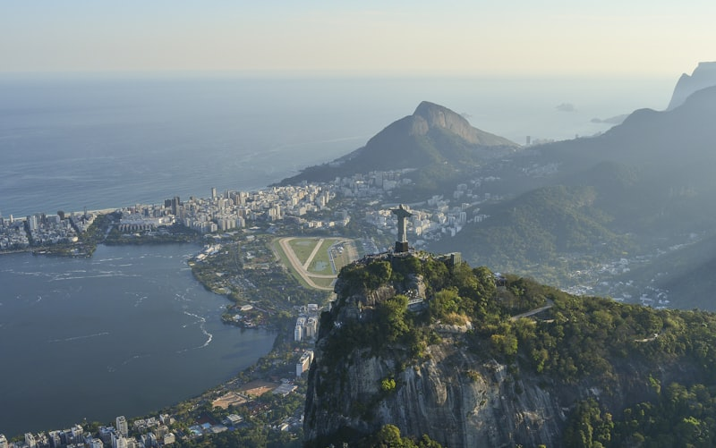
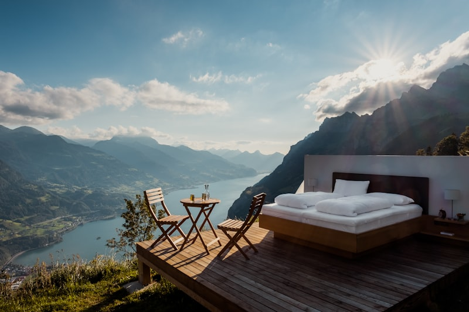
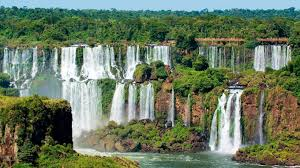
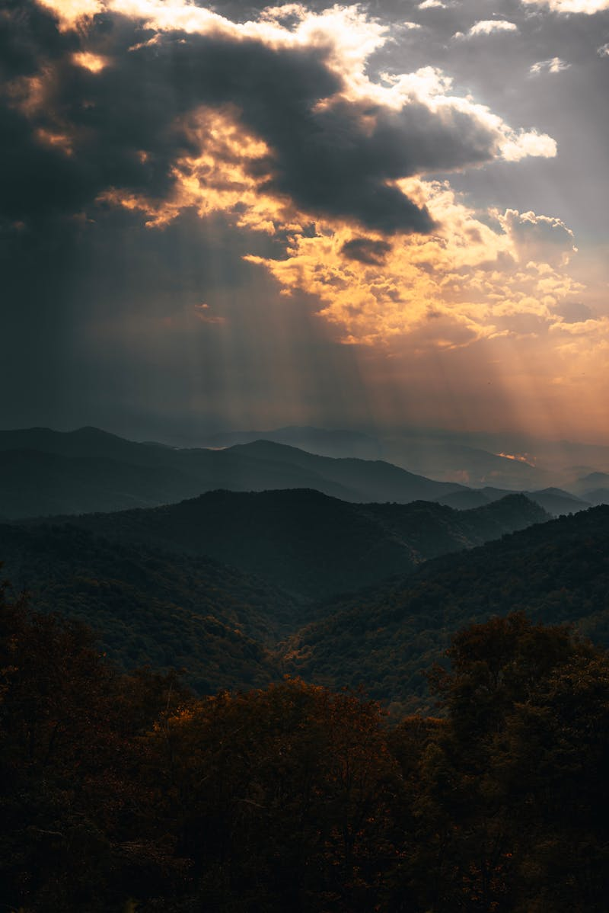
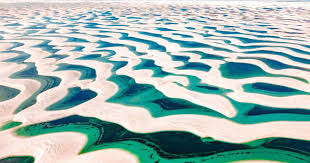

Nossos Destinos
Selecione o destino perfeito para sua próxima aventura

Rio de Janeiro, RJ
A Cidade Maravilhosa encanta visitantes do mundo inteiro com o Cristo Redentor, o Pão de Açúcar, as praias de Copacabana e Ipanema, e a vibrante vida noturna carioca.
Sudeste
Salvador, BA
Capital da Bahia, Salvador é berço da cultura afro-brasileira. O Pelourinho, Patrimônio da Humanidade, é um labirinto de cores, música e história colonial.
Nordeste
Foz do Iguaçu, PR
As Cataratas do Iguaçu são um espetáculo da natureza com 275 quedas d'água. Considerada uma das Sete Maravilhas Naturais do Mundo Moderno.
Sul
Fernando de Noronha, PE
Arquipélago paradisíaco com águas cristalinas perfeitas para mergulho. Patrimônio Natural da Humanidade pela UNESCO, é o destino dos sonhos de ecoturistas.
Nordeste
Pantanal, MS/MT
A maior planície alagada do planeta é um paraíso para observação de fauna. Onças, araras, jacarés e capivaras em seu habitat natural.
Centro-Oeste
Lençóis Maranhenses, MA
Paisagem surreal de dunas brancas e lagoas cristalinas de água doce. Um dos cenários mais únicos e fotogênicos de todo o Brasil.
NordesteRegiões do Brasil
Cada região oferece experiências únicas e inesquecíveis
Nordeste
Praias paradisíacas, cultura rica, forró e culinária marcante.
Sudeste
Grandes cidades, história do café, museus e vida cosmopolita.
Sul
Serras, vinícolas, influência europeia e paisagens deslumbrantes.
Norte
Amazônia, rios imensos, biodiversidade e cultura indígena.